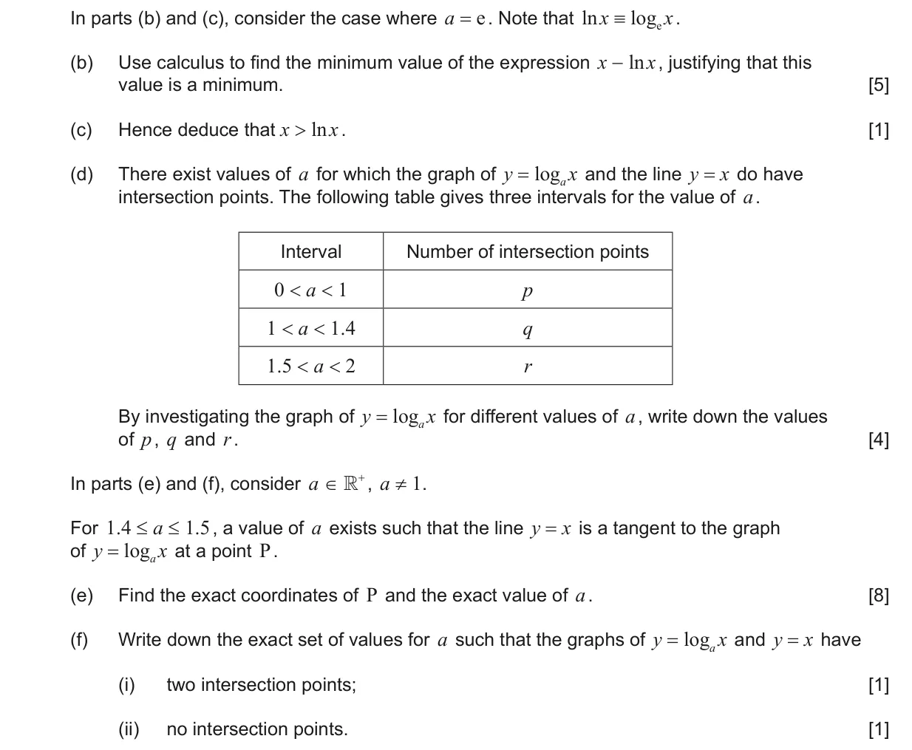
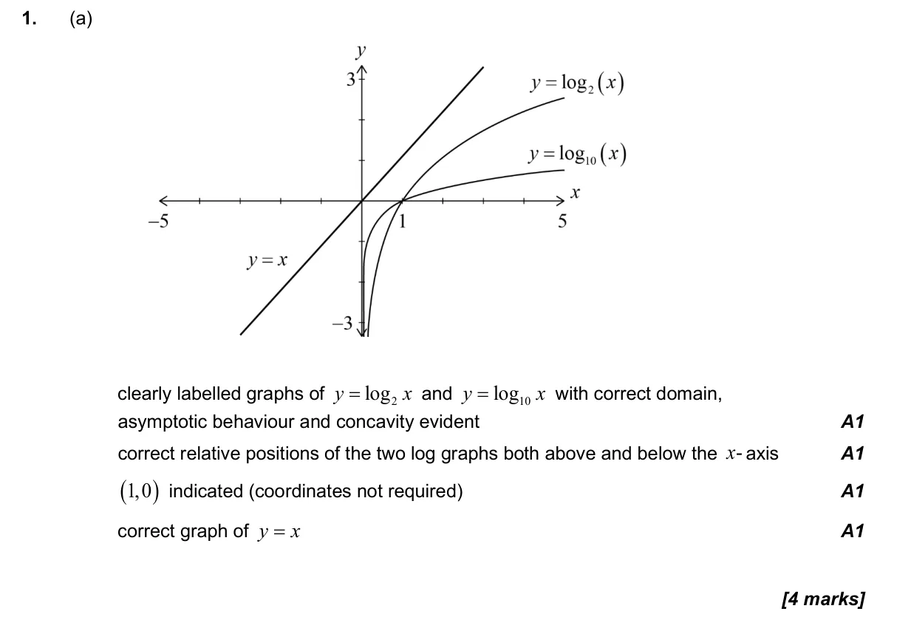
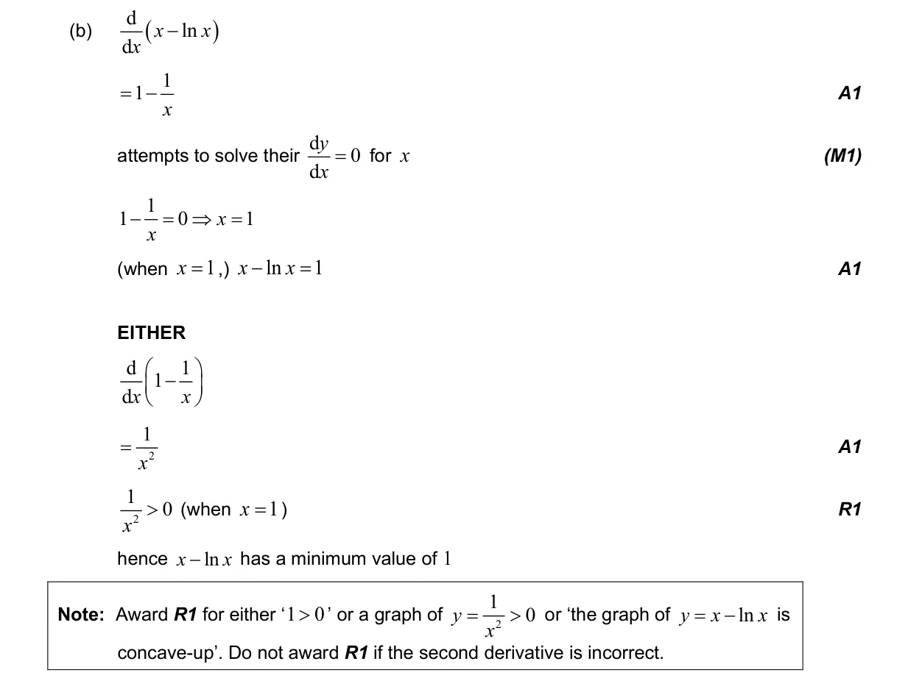
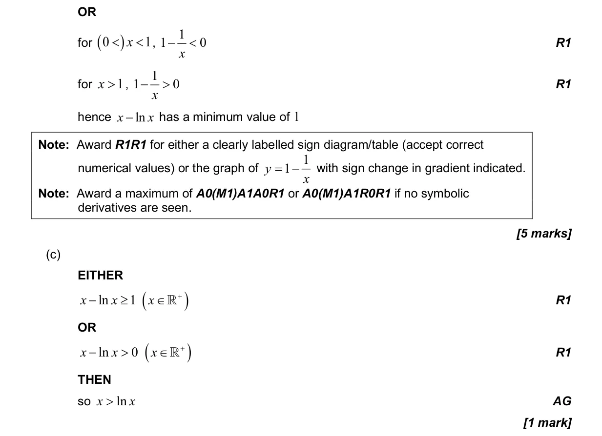
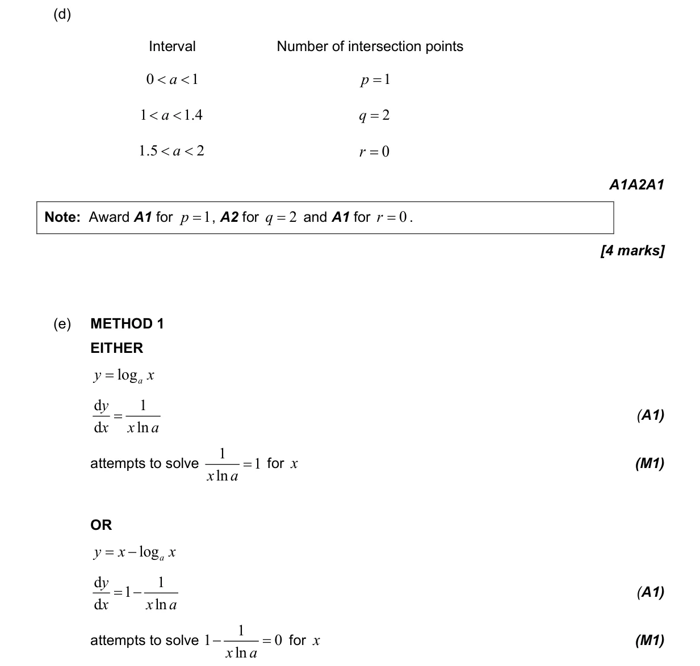
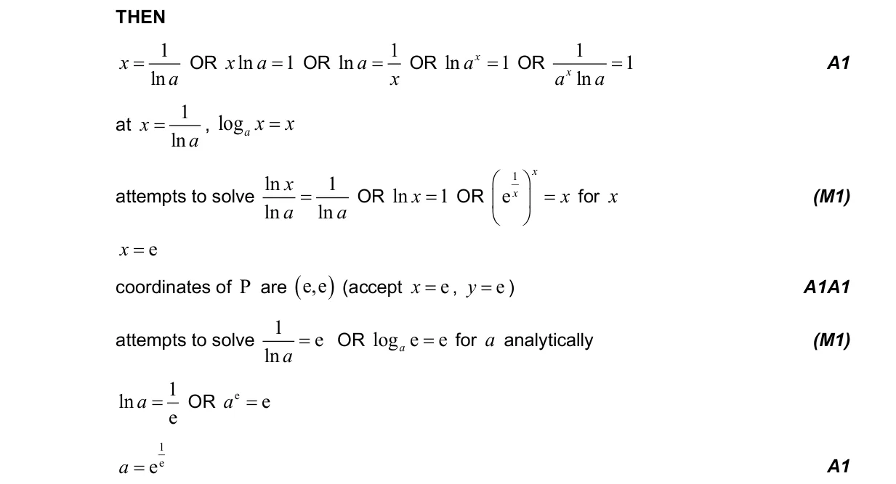
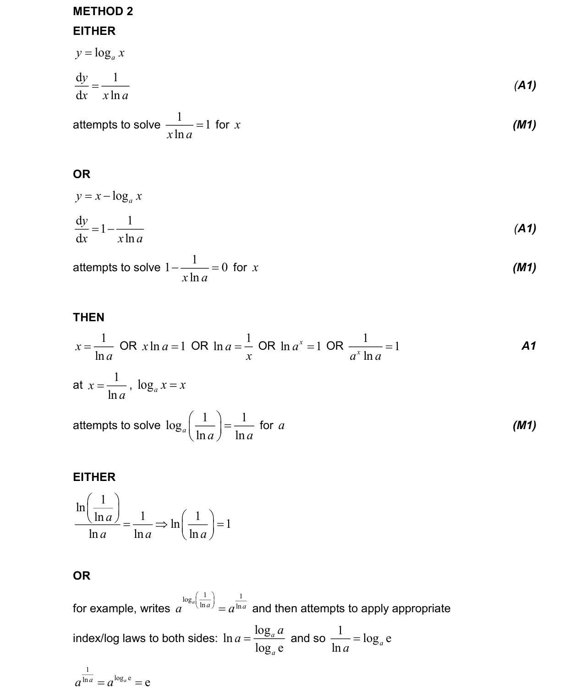
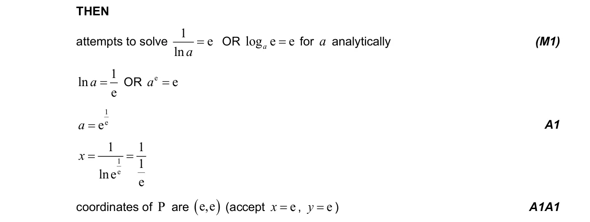
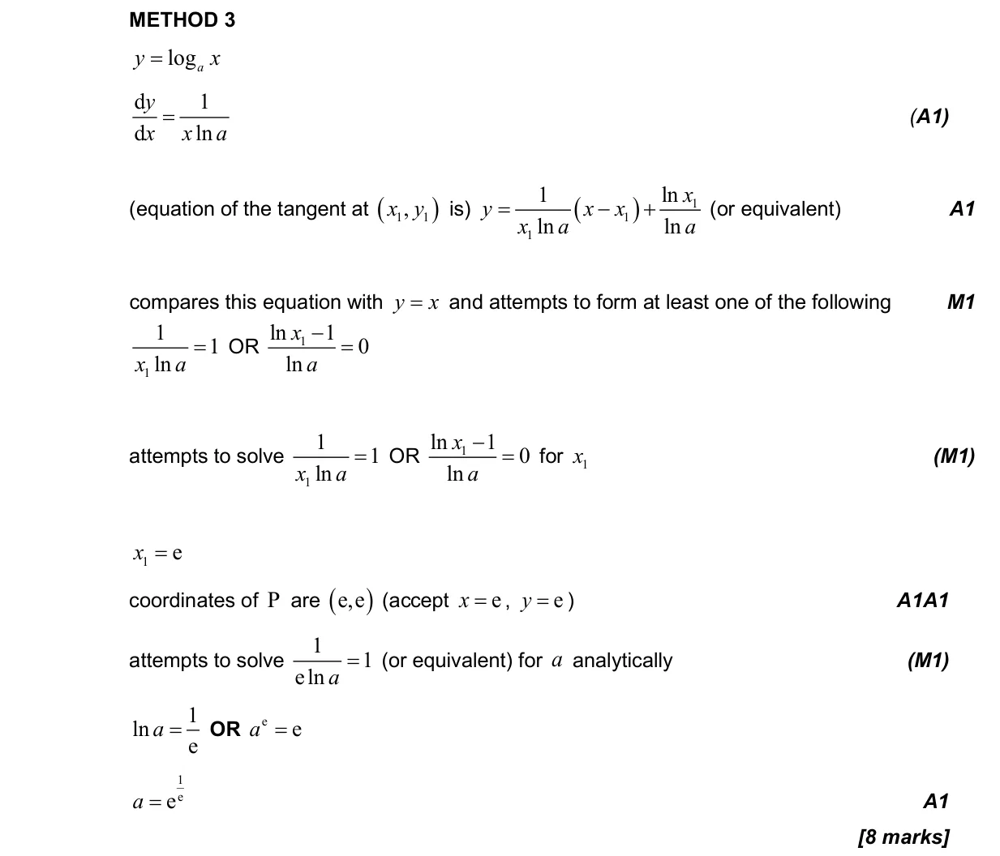
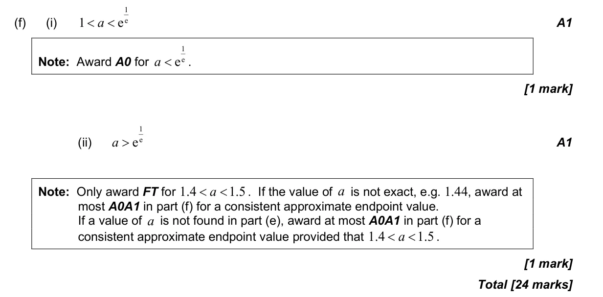

2.9 Exponential and logarithmic functions2.4 Key features of graphs5.4 Tangents and normals5.15 Further standard derivatives and integrals1.7 Laws of exponents and logarithms5.8 Optimization, local extrema and points of inflexion2.3 Graphs of functions5.6 Differentiating polynomials n in Q, chain, product and quotient rules5.7 The second derivative1.6 Simple deductive proof
Question


Markscheme








